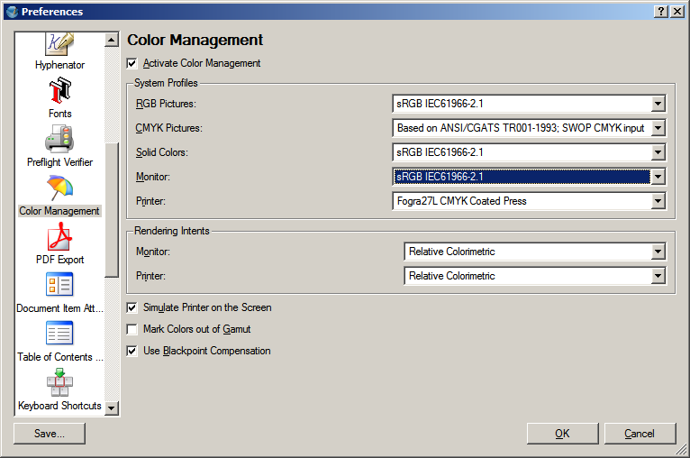
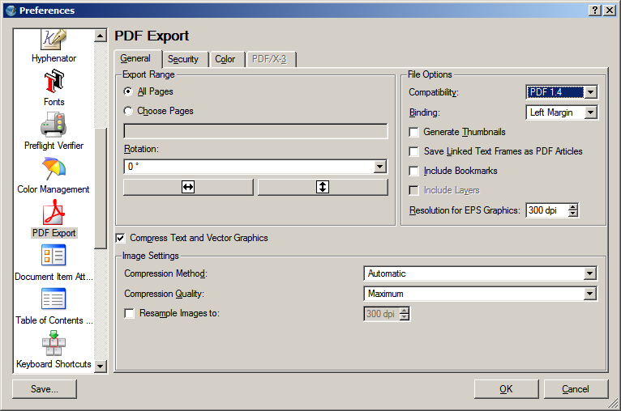
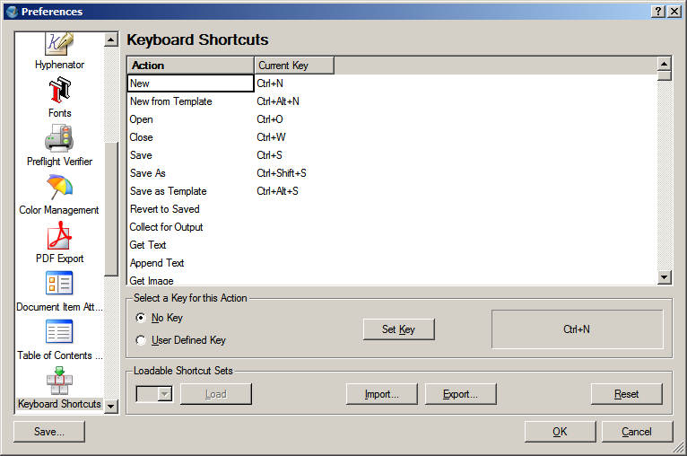
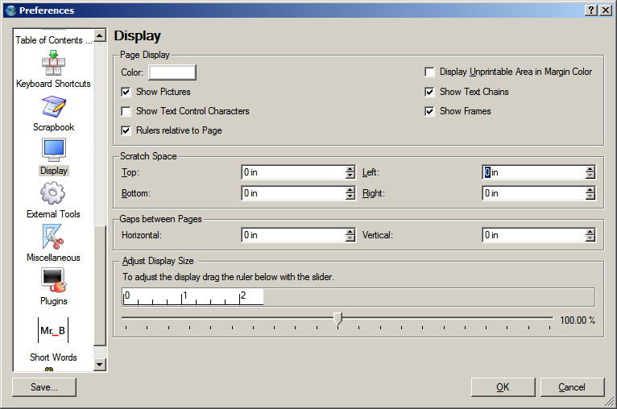
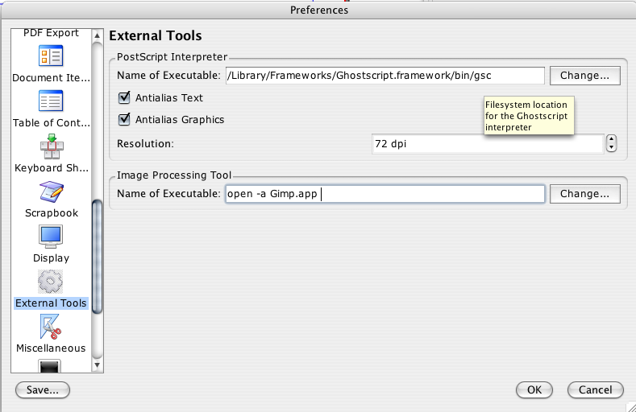
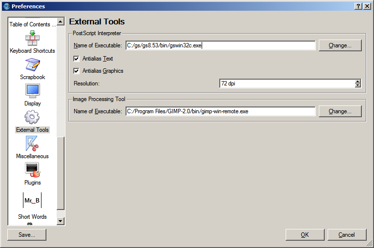

The settings panels are the heart of changing the default behaviors of Scribus and give you considerable flexibility in setting document and program defaults. If you are new to page layout, some of these terms might not be familiar, but there is a multi-lingual glossary on http://wiki.scribus.net compiled by a group of Scribus users, as well as the included documentation.
Scribus' preferences are kept in a hidden directory .scribus. The location of which is as follows:
.scribus13.rc file, a scribusfont.rc file which preserves your font preferences and a prefs13.xml. These files are stored in XML format, so you can inspect its contents with a text editor. If you have installed the scripter plug-in, there will also be a scripter.rc file which lists most recently used scripts. There might also be several directories, which are configuration or history files. If you are troubleshooting starting Scribus, rename, do not delete these files and directories. If you rename the directory, on re-starting Scribus, the launch time will be somewhat longer, as Scribus creates a cache of installed fonts. On the second re-start of Scribus, it will be much quicker.
You can change the Document Setup preferences while a document is open and those preferences will remain only for the currently open doc. When you change the application preferences, any new documents will inherit these preferences and default settings.
Within these panels below, you can change many of the defaults for Scribus, many of which can be changed or overridden in with a menu or right click context menu on an object while editing or in the measurements palette.
Note: The screen captures below are on Windows 2000, Linux and MacOSX may vary slightly.
You can change the default theme with Scribus to include themes like Liquid or the new themes based on KDE plug-ins. Scribus will inherit KDE themes and decorations if you have KDE running. If you do not have KDE installed, you can also tune the look of your Qt programs separately with qtconfig from the command line. Simply open a console window and type qtconfig. The configuration panels in Qtconfig are pretty self explanatory. I would advise not increasing the font size above 12 points, as some buttons in Scribus menus might be obscured. In this example, the fonts have been changed to TrueType fonts at 12 points and Scribus is using the default theme inherited from KDE.
On MacOSX and Windows, you do not need to access qtconfig as it inherits the styles from the operating system. However, changing the default to Platinum or other style, may not appear so attractive and these styles are primarily for Linux and Unix systems.
|
Note also that the "Languages" drop down can be blank. This merely means Scribus will use the system's default language.
If you have a wheel mouse, one of the nice defaults of Scribus is using this to scroll through a Document. Wheel jump changes the number of lines for each scroll of the mouse wheel. Grab Radius defines how much distance is allowed to select an object. Smaller numbers mean more precise, but sometimes more difficult selection of smaller objects.
These are user selectable paths for your documents, ICC color profiles and python scripts. Changing them is simply clicking on your preferred location. Note: hidden directories are not viewed by default, but can be seen by right clicking the file selector widget and choosing. "Show Hidden".
This panel sets the defaults for paper size, page margins and Auto save options. Auto-save enables Scribus to save your file with a backup file with .sla.bak extension. The section "Preset Layouts" will offer you a choice of standard margin settings, depending on wether you are creating a book, magazine or other document. You can also choose to have the left or right page first as well.
 |
This panel sets the default distances and colors, as well as the snap to settings. Baseline Grids is the set of horizontal guides which forces text in multiple columns to align horizontally, as shown below. Settings for the distances for baselines are in Paragraph Styles, as well as the next panel Typography
 |
Here you can change options for typographic features including subscript, superscript, automatic line spacing and scaling of small capitals. Disp.: means displacement or difference in distance above/below normal text. Baseline Grids are non-printing grids which align text across multiple columns on the page. Baseline Offset is the distance from the top of the page where the topmost baseline is placed.
 |
 |
In the Tools tab you can change the defaults for many common tasks and tools: font, size and color, text frame defaults, image frame defaults and zoom defaults. Most all of these can be overridden or changed with the the right click context menu or in the Properties Palette when selecting an object.You can also override these in the Document Setup dialog.
 |
You can make stars, triangles and convex polygons with intuitive controls. You can also apply gradient colors to all of these shapes within the measurements panel.
Hyphenation details are described here: Hyphenation in Scribus.
Selecting and installing fonts correctly is one of the most important configuration items with Scribus and an extensive set of notes is here: Fonts and Scribus. If there is one part of the documentation you really must read, it is this one.
Note in this dialog, the setting of sRGB is incorrect for a monitor profile. There are detailed notes on Color Management under Scribus and Creating a Monitor Profile with Littlecms. MacOSX and Windows users can use commercially available tools like Monaco's Color Tools, Eye-One, Adobe Gamma and Scribus can use them along side other color savvy applications. MacOSX users can use any of the profiles available to Color Sync. Scribus will automatically discover any system profiles installed.
|  |
Note: PDF/X-3 preferences are disabled if color management is disabled. CMS must be enabled to use PDF/X-3.
For more info on PDF look at PDF Export Options and PDF/X-3 and Scribus.. This section of the preferences has extensive tool tips as well.
|  |
This new functionality is explained here: http://wiki.scribus.net/index.php/Creating_a_Table_of_Contents
|  |
Scribus gives you complete flexibility with respect to keyboard shortcuts. Moreover, once customized, you can export them into a separate XML file which can be exported and saved separately, along with making it portable to other machines. The default file suffix is .ksxml. The XML is a unicode file and should not have issues being transported across platforms, with the only caveat that Macs have an option and command meta key, where Linux and Windows share common keyboards.
With scrapbooks, you can right button drag and drop frequently used items, including pictures, images and text files for quick placement. Scrapbooks can be saved with a file or independently of a document, as a separate scrapbook which can be loaded use with many different Documents. Separate scrapbooks are kept with a .scs designation. This panel sets the defaults for the thumbnail size in the scrapbook palette and if scrapbooks should be saved automatically when changed.
This panel sets the defaults and options for margin colors, frame display, page background and you have the option to display unprintable areas in the selected margin color. You can also enable page side by side or also known in DTP lingo as "reader spreads". The Adjust Display Size enables you to adjust the screen sizing in order that 1 inch on the screen actually measures 1 inch. Just take an accurate ruler and place it on the screen and adjust the slider until it matches your ruler
|  |
This panel enables you to change the default settings for the location of Ghostscript and your preferred image editing tool. If you have installed Ghostscript on Windows before installing Scribus, it is usually automatically detected.If you receive an error message on Windows indicating EPS files cannot be used. This is where the settings can be changed to allow Scribus to find the correct location of Ghostscript.
On Linux:
 |
In the example above, a parallel build of Ghostscript 8.53 has been installed in /usr/local/bin/ for better results with EPS,PS and PDF importing, as well as speedier print-previews. Linux and Unix users should see the hints in Advanced Ghostscript.
You can use any available image editor including cinepaint, krita and even Photoshop with wine. With Crossover, you would use (with quotes) in the dialog something like this :
"/opt/cxoffice/bin/wine" --workdir "C://Adobe" --check --cx-app "C:////Adobe////Photoshp.exe"You can copy the exact settings from the desktop shortcut from the menu editor in KDE.
One other important note, when using the GIMP as your image editor, you must close GIMP completely before, control will return to Scribus. The workaround for this is to use gimp-remote
On MacOSX
Depending on the language settings, the Preferences menu entry appears under Edit->Preferences or under Scribus->Preferences. If both entries are present, the one under Scribus->Preferences will not work. This is a limitation in the Qt3 libraries.
|  |
Above are the recommended settings, provided you are using GIMP and/or if you have installed the Ghostscript.framework from http://aqua.scribus.net.
On Windows:
Note the correct .exe name for Ghostscript is gswin32c.exe, not gswin32.exe.
|  |
To use GIMP as your image editor on Windows , you must close GIMP completely before control will return to Scribus. The workaround for this is to use c:\path to\gimp-remote.exe gimp-2.2.exe as shown instead.
The default on windows is:
C:/Program Files/GIMP-2.0/bin/gimp-win-remote.exe gimp-2.2.exe This will then either start a new instance of gimp or use the currently running version of gimp.
This panel controls the loading and displays the type of plugins available to Scribus. Normally, you should not need to touch this panel.
Short Words is a plug-in to assist adding non breaking spaces to short words like Jr. measurements like km Details on configuration and use are here: Short Words in Scribus.
Scripter Extensions are special scripter module or scripts which are loaded at startup to modify the abilities of the python scripter plug-in within Scribus. Details are here: Scripter Extensions Howto. The console tab is for choosing syntax highlighting colors within the scripter console.